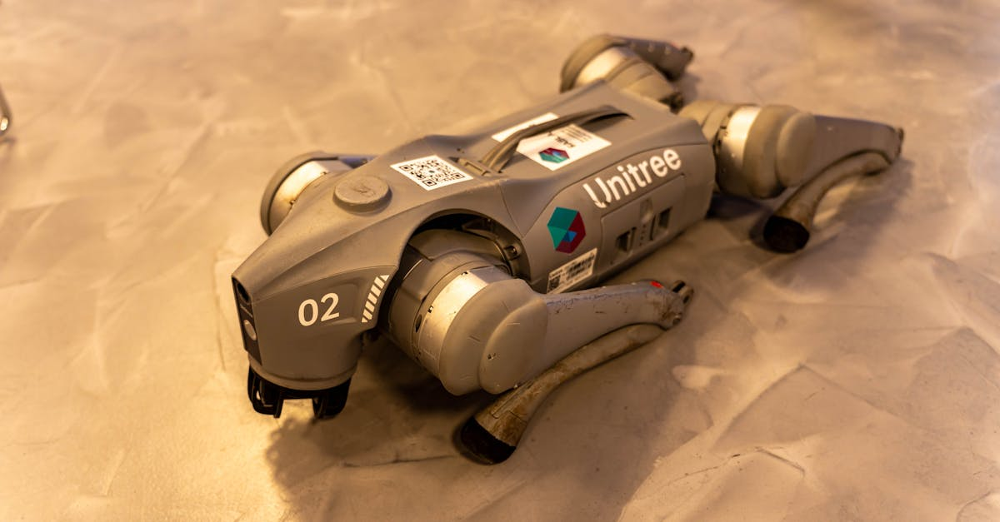
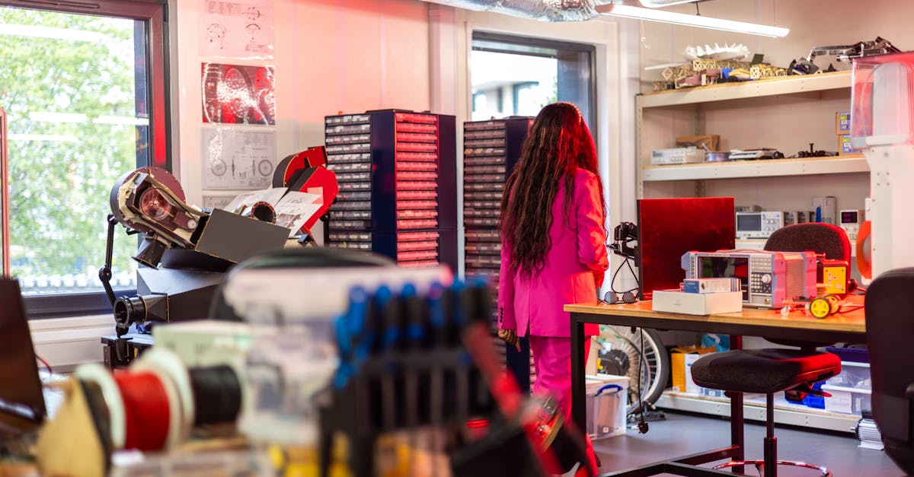

L'Ère des Agents IA : Au-delà des Chatbots
Le monde de la technologie est en pleine effervescence, non pas pour une nouvelle application de chatbot, mais pour une révolution plus profonde : celle des agents d'intelligence artificielle. Ces systèmes autonomes, capables d'exécuter des tâches complexes avec une intervention humaine minimale, captent l'attention des géants de la tech et des investisseurs avisés. Alors que Meta, anciennement Facebook, explore des acquisitions stratégiques, notamment une tentative de rachat avortée d'une valeur de 2 milliards de dollars, l'enjeu dépasse le simple cadre d'une transaction commerciale. Il s'agit de la course à la maîtrise de l'autonomie artificielle. Ces agents ne se contentent pas de répondre à des questions ; ils anticipent, planifient et agissent. Imaginez un assistant personnel qui non seulement gère votre emploi du temps, mais optimise également vos investissements financiers, négocie des contrats ou même pilote des opérations industrielles complexes. C'est la promesse des agents IA. Leur développement rapide soulève des questions fondamentales sur l'avenir du travail, de l'économie et de la souveraineté technologique. La Chine, en particulier, montre un intérêt marqué, cherchant à comprendre et potentiellement à contrôler cette nouvelle vague d'innovation. Pourquoi un tel engouement ? Parce que ces agents représentent la prochaine frontière de l'automatisation, promettant des gains d'efficacité et de productivité sans précédent. Pour les marchés financiers, et plus spécifiquement pour le trading de cryptomonnaies, la compréhension de ces technologies est cruciale. Des agents IA sophistiqués pourraient révolutionner les stratégies d'investissement, permettant des analyses prédictives et des exécutions ultra-rapides, bien au-delà des capacités humaines actuelles.
👉 À lire : Chine : La tech détrône le "vin d'empereur" en bourse

Meta et l'Ambition des Systèmes Autonomes
L'actualité récente a mis en lumière les manœuvres de Meta, qui aurait tenté d'acquérir une entreprise spécialisée dans le développement d'agents IA pour près de 2 milliards de dollars. Bien que les détails précis de cette transaction restent flous et que l'opération ait été bloquée, elle témoigne d'une stratégie claire de la part de Meta : investir massivement dans l'autonomie intelligente. Loin des simples interfaces conversationnelles, l'objectif est de construire des systèmes capables d'agir de manière proactive dans le monde numérique et physique. Ces agents IA sont conçus pour comprendre des contextes complexes, prendre des décisions éclairées et exécuter des séries d'actions pour atteindre des objectifs définis. Pensez à un agent capable de gérer une chaîne d'approvisionnement entière, d'optimiser les flux de trafic dans une ville intelligente, ou encore, pour les adeptes de la finance décentralisée, de gérer un portefeuille d'actifs cryptographiques de manière autonome, 24h/24 et 7j/7. Les implications sont considérables. Pour Meta, cela pourrait signifier une avance décisive dans la course au métavers, en dotant cet univers virtuel d'une population d'agents intelligents capables d'interagir de manière réaliste avec les utilisateurs. Cela pourrait également renforcer leurs positions dans la publicité ciblée et la gestion de contenu. L'échec de cette acquisition souligne cependant les défis réglementaires et géopolitiques, notamment face à l'opposition de pays comme la Chine, soucieux de ne pas laisser les technologies clés échapper à leur contrôle. Cet intérêt marqué pour les agents IA n'est pas anodin ; il s'agit d'une course de fond pour maîtriser la prochaine génération d'outils d'automatisation avancée.
👉 À lire : IA: 50M$ pour influencer la politique US
La Géopolitique des Agents IA : Le Cas Chinois
L'intérêt soudain de la Chine pour bloquer l'acquisition potentielle de Meta n'est pas un acte isolé, mais s'inscrit dans une stratégie plus large de souveraineté technologique. Alors que les agents IA promettent de remodeler l'économie mondiale, les grandes puissances cherchent à contrôler cette technologie de rupture. La Chine, déjà leader dans certains domaines de l'IA, voit dans ces agents autonomes une clé pour maintenir sa compétitivité et potentiellement surpasser ses rivaux occidentaux. L'idée qu'une entreprise américaine comme Meta puisse acquérir une technologie de pointe dans ce domaine, potentiellement intégrée dans ses vastes écosystèmes, représente une menace stratégique pour Pékin. Les agents IA, par leur capacité à opérer indépendamment, pourraient être utilisés pour des tâches critiques, allant de la logistique et la finance à la recherche scientifique et la défense. La crainte est que ces technologies, développées et contrôlées par des entités étrangères, ne deviennent des leviers d'influence ou des vecteurs de dépendance technologique. Le blocage de transactions comme celle impliquant Meta est donc une mesure défensive, visant à protéger l'industrie nationale et à encourager le développement d'agents IA chinois. Cette tension géopolitique autour de l'IA autonome met en lumière les enjeux colossaux de cette technologie. Pour les investisseurs, cela signifie une volatilité accrue et la nécessité de comprendre non seulement les aspects techniques, mais aussi les dynamiques politiques qui façonnent le paysage de l'IA. L'émergence d'agents IA performants, capables d'analyser et d'agir sur les marchés financiers, pourrait devenir un nouveau terrain de jeu, voire de confrontation, entre les nations.
Applications Concrètes : De la Finance à l'Industrie
Les agents IA ne sont pas de simples concepts théoriques ; leurs applications pratiques commencent à émerger dans divers secteurs, promettant de transformer radicalement nos méthodes de travail et d'investissement. Dans le domaine financier, l'impact est déjà palpable. Des agents spécialisés sont développés pour analyser des flux de données massifs, identifier des tendances de marché, prédire les fluctuations de prix et exécuter des transactions à une vitesse et une échelle impossвідуables pour un humain. Ces agents peuvent opérer en continu, tirant parti des opportunités 24h/24, un avantage considérable dans le monde volatile des cryptomonnaies. Imaginez un agent IA capable de surveiller des milliers de projets crypto, d'analyser les sentiments sur les réseaux sociaux, de décrypter les rapports financiers des entreprises blockchain et d'ajuster automatiquement un portefeuille pour maximiser les rendements tout en minimisant les risques. Au-delà de la finance, l'industrie manufacturière bénéficie également de ces avancées. Des agents IA peuvent optimiser les chaînes de production, gérer les stocks, prédire les pannes d'équipement et améliorer l'efficacité logistique. Dans le secteur de la santé, ils pourraient aider au diagnostic, à la découverte de médicaments et à la personnalisation des traitements. Les entreprises qui adoptent ces technologies gagnent un avantage concurrentiel significatif. L'automatisation poussée par les agents IA ne vise pas seulement à remplacer les tâches répétitives, mais surtout à augmenter les capacités humaines, en libérant les experts pour se concentrer sur des problèmes plus stratégiques et créatifs. La question n'est plus de savoir si ces agents vont changer le monde, mais plutôt à quelle vitesse et comment nous allons nous adapter à cette transformation inévitable.
L'Investissement dans les Agents IA : Opportunités et Risques
L'engouement pour les agents IA se traduit logiquement par un afflux d'investissements. Les fonds de capital-risque et les grandes entreprises technologiques injectent des milliards dans les startups développant ces technologies. Cette ruée vers l'or numérique présente des opportunités d'investissement considérables, mais comporte aussi des risques non négligeables. Pour les investisseurs individuels, l'accès direct aux startups prometteuses peut être difficile. Cependant, des voies indirectes existent. L'investissement dans des entreprises cotées qui développent activement des agents IA, comme les géants de la tech (Meta, Google, Microsoft) ou des entreprises spécialisées dans les semi-conducteurs et les logiciels d'IA, peut être une stratégie pertinente. Le secteur des cryptomonnaies offre également une perspective intéressante. Des projets blockchain visent à créer des infrastructures décentralisées pour le développement et le déploiement d'agents IA autonomes, potentiellement capables de trader sur les marchés crypto. Ces 'IA agents' décentralisés pourraient offrir une transparence et une sécurité accrues par rapport aux solutions centralisées. Cependant, la prudence est de mise. Le marché des agents IA est encore jeune et sujet à une forte volatilité. Les valorisations peuvent être excessives, et le succès d'une technologie particulière n'est jamais garanti. De plus, les risques réglementaires, comme l'illustre l'intervention de la Chine, peuvent freiner l'innovation ou limiter l'accès à certains marchés. Il est crucial pour tout investisseur de réaliser une due diligence approfondie, de diversifier ses portefeuilles et de rester informé des évolutions technologiques et géopolitiques. L'investissement dans les agents IA demande une vision à long terme et une compréhension des défis techniques, éthiques et politiques inhérents à cette révolution.

Anticiper l'Avenir avec les Agents IA
L'ascension des agents IA marque un tournant décisif. Ces systèmes autonomes, capables d'apprendre, de raisonner et d'agir, redéfinissent les limites du possible. L'intérêt stratégique de géants comme Meta et l'attention géopolitique de la Chine ne font que confirmer l'importance capitale de cette technologie. Pour les professionnels de la finance et du trading, comprendre et intégrer ces outils n'est plus une option, mais une nécessité. Les agents IA offrent la perspective d'une optimisation sans précédent des stratégies de trading, permettant des analyses prédictives fines et des exécutions automatisées sur les marchés 24h/24. Que ce soit pour le trading traditionnel ou pour l'univers dynamique des cryptomonnaies, leur potentiel est immense. Ils promettent d'améliorer l'efficacité, de réduire les erreurs humaines et d'ouvrir de nouvelles voies de profitabilité. Cependant, cette transition n'est pas sans défis. Les questions éthiques, la sécurité des données, la nécessité d'une réglementation adaptée et les implications sur l'emploi sont autant de sujets qui nécessitent une réflexion approfondie. L'investissement dans les agents IA, bien que potentiellement très rémunérateur, exige une approche mesurée et informée, tenant compte des risques technologiques et géopolitiques. Comme le disait un analyste fictif : 'Les agents IA ne sont pas juste des outils, ce sont les futurs architectes de notre économie numérique.' La clé réside dans notre capacité à collaborer avec ces intelligences artificielles, à les guider et à façonner leur développement de manière responsable. L'avenir appartient à ceux qui sauront anticiper et s'adapter à cette nouvelle ère d'autonomie intelligente.
Conclusion
La montée en puissance des agents IA, symbolisée par les manœuvres stratégiques de Meta et les réactions géopolitiques, confirme une tendance de fond : l'automatisation intelligente devient le moteur principal de l'innovation technologique et économique. Ces systèmes autonomes promettent de révolutionner des secteurs entiers, de la finance à l'industrie, en passant par la recherche. Pour le monde du trading de cryptomonnaies, l'avènement d'agents IA capables d'opérer 24h/24 offre des perspectives de performance et d'efficacité inédites. Les opportunités d'investissement sont considérables, mais les risques, qu'ils soient technologiques, financiers ou géopolitiques, demandent une vigilance constante. Chez CryptoMind AI, nous sommes convaincus que la synergie entre l'intelligence humaine et les capacités des agents IA représente l'avenir du trading. Notre mission est de vous aider à naviguer dans cette nouvelle ère, en exploitant le potentiel de ces technologies pour une gestion d'actifs plus performante et plus autonome. Restez informés, investissez judicieusement et préparez-vous à l'impact transformateur des agents IA.